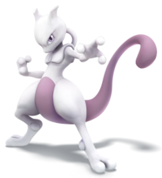

-
Pikachu
HP 300

Descrição
Pikachu é um Pokémon de roedor curto e gordinho. É coberto de pele amarela com duas listras marrons horizontais nas costas. Tem uma boca pequena, orelhas longas e pontudas com pontas pretas e olhos castanhos. Cada bochecha é um círculo vermelho que contém uma bolsa para armazenamento de eletricidade. Tem antebraços curtos com cinco dedos em cada pata, e seus pés têm cada um três dedos. Na base de sua cauda em forma de raio há um pedaço de pele marrom. Uma fêmea terá um entalhe em forma de V no final de sua cauda, que se parece com o topo de um coração. É classificado como quadrúpede, mas é conhecido por ficar em pé e andar sobre suas patas traseiras. O anime mostrou que Pikachu selvagem vive em grupos em áreas florestadas. Pikachu se comunica entre si usando guinchos e tremor de cauda como gestos amigáveis.
-
Charizard
HP 800

Descrição
Charizard é um Pokémon dracônico e bipedal. É principalmente laranja com um creme de baixo do peito para a ponta de sua cauda. Tem um pescoço longo, pequenos olhos azuis, narinas ligeiramente levantadas, e duas estruturas semelhantes a chifres salientes da parte de trás de sua cabeça retangular. Há duas presas visíveis na mandíbula superior quando sua boca está fechada. Duas grandes asas com partes inferiores azul-esverdeadas brotam de suas costas, e um apêndice parecido com chifre saem do topo da terceira articulação de cada asa. Um único dedo de asa é visível através do centro de cada membrana de asa. Os braços de Charizard são curtos e magros comparados com sua barriga robusta, e cada membro tem três garras brancas. Tem pernas estonteadas com solas cor de creme em cada um de seus pés plantilados. A ponta de sua cauda longa e afunilada queima com uma chama considerável. Charizard voa em busca de oponentes poderosos para lutar, e seu fogo queimará mais quente à medida que ganha experiência. Sua respiração ardente é capaz de derreter pedregulhos, geleiras maciças, e é conhecida por causar acidentalmente incêndios florestais.
-
Mewtwo
HP 1200
Descrição
Mewtwo é um Pokémon artificial. É um Pokémon bipedal e humanoide com algumas características felinas. É principalmente cinza com uma cauda longa e roxa. Em cima de sua cabeça estão dois chifres curtos e contundentes, e tem olhos roxos. Um tubo se estende da parte de trás de seu crânio até o topo de sua coluna, contornando seu pescoço. Tem um peito e ombros definidos, que se assemelham a um peitoral. Os três dígitos em cada mão e pé têm pontas esféricas. Sua cauda é grossa na base, mas fina antes de terminar em uma pequena lâmpada.